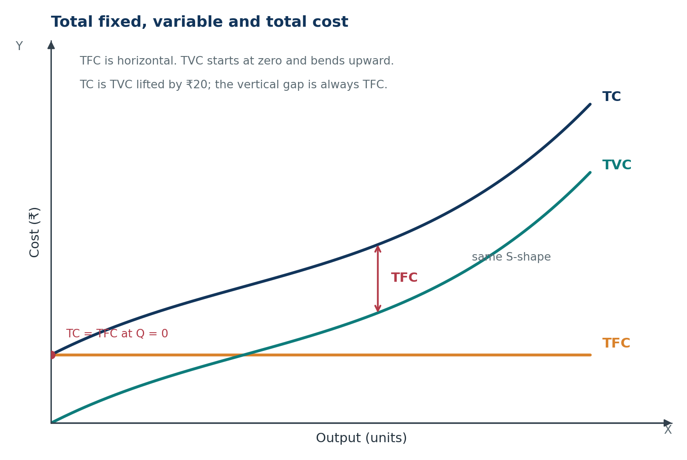
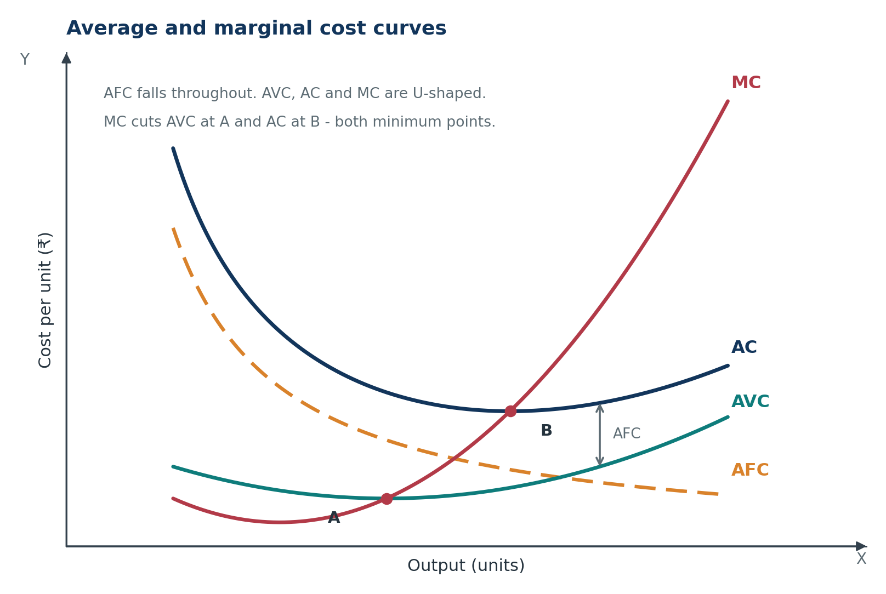
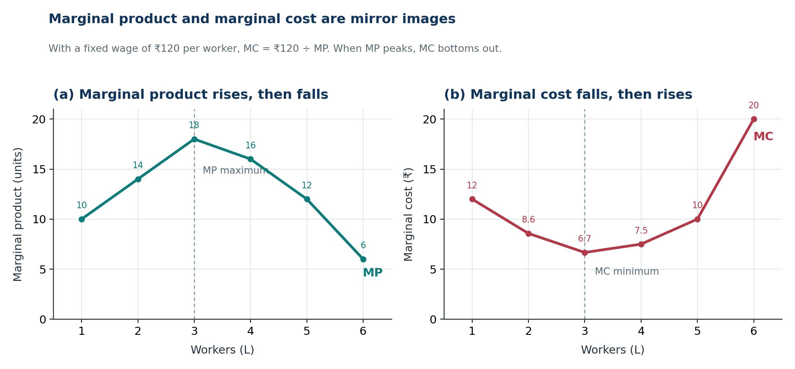
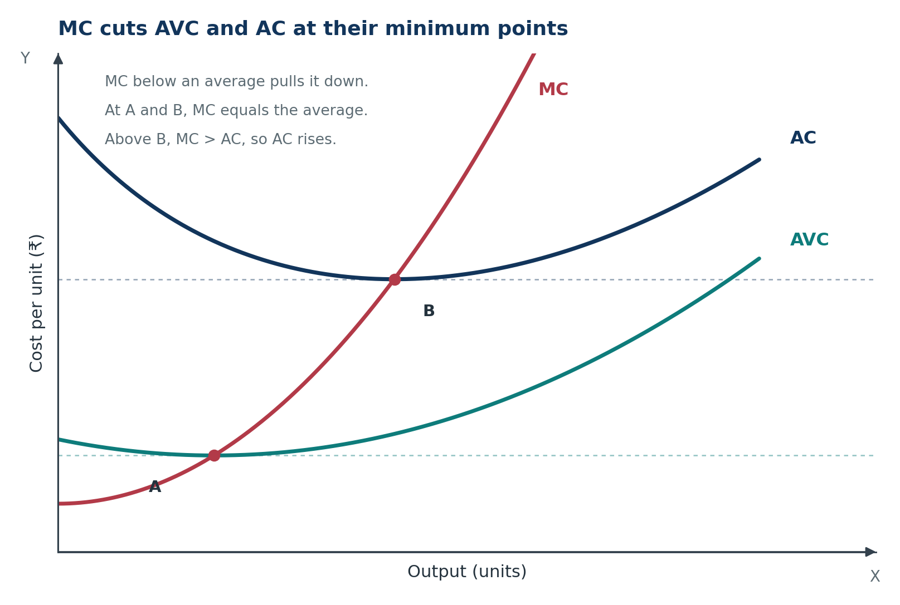
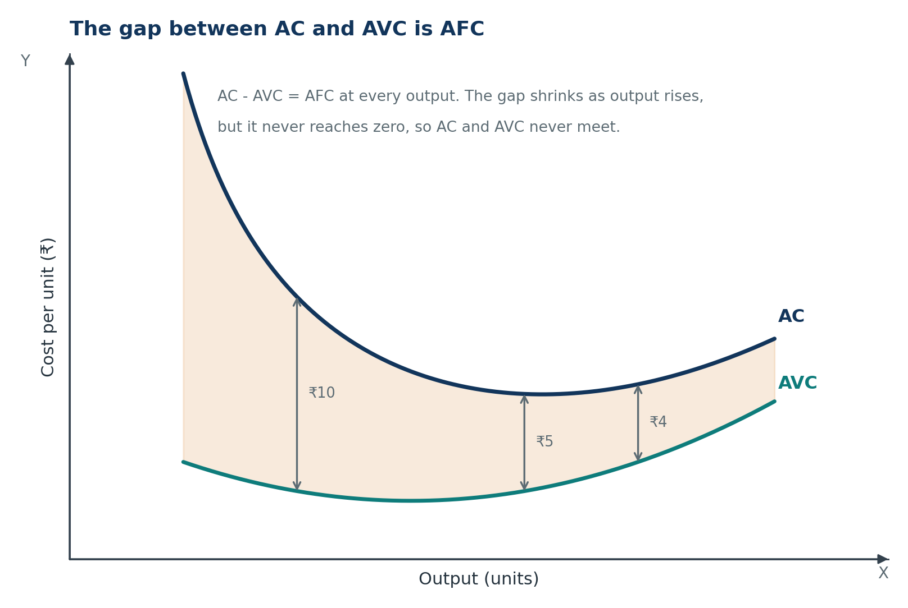
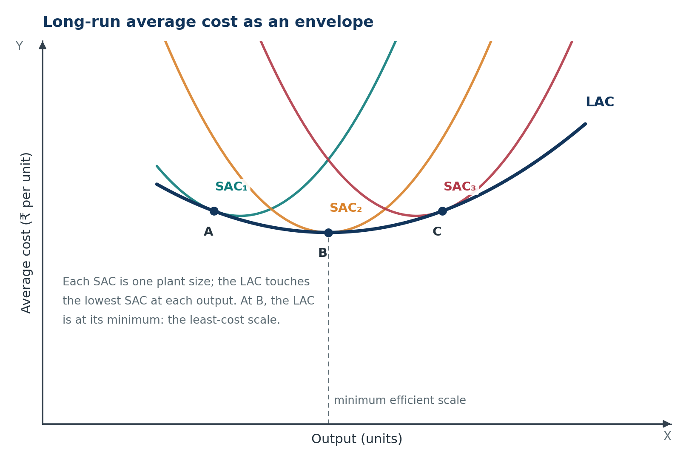

Microeconomics · Class 11Chapter 6Notes + quick revision
Cost
Cost is the value of everything a firm gives up to produce. Split it into fixed and variable, average and marginal, and the seven short-run curves stop being seven facts to memorise — they become one story about output, productivity and scale.
Chapter at a glance
Nine stops: from what cost actually measures to the full cost table and the exam lines that decide marks. Tap a card to jump straight in.
The one-line idea: cost is the value of everything a firm gives up to produce output, and the seven short-run cost curves are seven views of the same cost data.
The core question: how does cost change when output changes, and why do the curves look the way they do?
Key Terms — Read These First
The words that carry marks. Read them once now, then test yourself after the chapter.
- Cost
- The value of all inputs used to produce output, including inputs supplied by the owner.
- Explicit cost
- An actual money payment to outsiders: wages, hired rent, raw material, electricity.
- Implicit cost
- The imputed value of self-owned inputs: own shop rent, own capital interest, owner's labour.
- Normal profit
- The minimum return needed to keep the entrepreneur in business; part of implicit and economic cost.
- Economic cost
- Explicit cost plus implicit cost.
- Accounting profit
- Total revenue minus explicit cost.
- Economic profit
- Total revenue minus economic cost; accounting profit minus implicit cost.
- Cost function
- The relationship between cost and output, C = f(Q), giving the minimum cost of each output.
- Short run
- A period in which at least one factor is fixed.
- Long run
- A period in which all factors are variable.
- Total fixed cost (TFC)
- Cost of fixed factors; constant at every output and positive at zero output.
- Total variable cost (TVC)
- Cost of variable factors; zero at zero output.
- Total cost (TC)
- TFC + TVC.
- Average fixed cost (AFC)
- TFC ÷ Q; falls continuously and never touches either axis.
- Average variable cost (AVC)
- TVC ÷ Q; U-shaped, with its minimum where MC = AVC.
- Average cost (AC)
- TC ÷ Q = AFC + AVC; U-shaped, with its minimum where MC = AC.
- Marginal cost (MC)
- The addition to total cost from one more unit: ΔTC ÷ ΔQ = ΔTVC ÷ ΔQ.
- Law of variable proportions
- As more of a variable factor is added to a fixed factor, marginal product first rises, then falls.
- Long-run average cost (LAC)
- The lowest average cost at each output when all factors are variable; the envelope of SAC curves.
- Economies of scale
- Falling average cost as plant size expands: specialisation, bulk buying, fuller machine use.
- Diseconomies of scale
- Rising average cost beyond the least-cost scale because coordination and supervision become harder.
- Minimum efficient scale
- The output at which LAC is at its minimum; the least-cost scale of plant.
What Cost Means
The idea of this section. Cost is not only the money that leaves the firm's bank account. It is the value of every input used, even when the owner supplies that input herself.
1.1 Cost, expense and opportunity cost
Definition. The cost of production is the total expenditure on the inputs used to produce a commodity, including the imputed value of inputs supplied by the firm's owners.
An expense is a payment for an input. Cost is wider: it is the value of every input used, whether or not money was paid for it.
A tailor who works from her own shop pays no rent. The shop is still costly, because it could have been rented to someone else. That forgotten rent is part of the cost of her business.
The idea behind this is opportunity cost: the value of the next best alternative given up. Every input used in one activity could have been used somewhere else.
1.2 Explicit cost, implicit cost and economic cost
Explicit cost is the actual money paid to outsiders for factor services: wages, rent of a hired building, raw material, electricity, insurance.
Implicit cost is the imputed value of inputs supplied by the owners: rent of the owner's land or shop, interest on the owner's capital, wages of the owner's labour and normal profit.
| Basis | Explicit cost | Implicit cost |
|---|---|---|
| Meaning | Payment to outsiders for factor services | Cost of self-supplied factors |
| Money payment | Actual money is paid | No money is paid |
| Examples | Wages, raw material, hired rent | Own shop rent, own capital interest, owner's labour |
Normal profit is the minimum return an entrepreneur must expect to stay in business. It is the opportunity cost of her time and capital, so it is part of implicit cost — not a surplus above cost.
When revenue just covers economic cost, economic profit is zero, but normal profit is still being earned.
Meera's bakery. Revenue ₹3,20,000. Explicit cost ₹1,90,000: flour and materials ₹90,000, wages ₹55,000, hired shop rent ₹30,000, electricity and other ₹15,000. Implicit cost ₹1,30,000: rent of her own shop ₹30,000, her own labour ₹45,000, interest on her own capital ₹20,000, and normal profit ₹35,000.
Accounting profit = ₹3,20,000 − ₹1,90,000 = ₹1,30,000. Economic cost = ₹1,90,000 + ₹1,30,000 = ₹3,20,000. Economic profit = ₹0.
Her accounting profit is not a pure surplus. It pays for the shop, her labour, her capital and normal profit. She earns exactly normal profit — enough to stay in business, but no more.
The accountant records explicit cost; the economist also records implicit cost. That is why a firm can show an accounting profit and still earn zero economic profit.
1.3 Cost is a flow
Cost is measured over a period — a day, a month, a year. A firm's cost is not a single stock of money sitting somewhere; it is the value of inputs used during the period.
- Q1. A firm pays ₹80,000 rent for a hired factory and uses its own building, which could earn ₹25,000. Classify both.
- Q2. Revenue is ₹5,00,000, explicit cost ₹3,20,000 and implicit cost ₹1,50,000. Find accounting and economic profit.
- Q3. Why is normal profit part of cost?
Show answers
- ₹80,000 is explicit cost (actual payment). ₹25,000 is implicit cost (imputed rent of a self-owned building).
- Accounting profit = ₹5,00,000 − ₹3,20,000 = ₹1,80,000. Economic profit = ₹5,00,000 − ₹4,70,000 = ₹30,000.
- Normal profit is the minimum return needed to keep the entrepreneur in business. It is the opportunity cost of her labour and capital, so it is part of implicit and economic cost.
The Cost Function and the Two Runs
The idea of this section. The cost function tells us the cheapest way to produce each output. The short run and the long run differ in how many inputs the firm can change.
2.1 The cost function
Definition. The cost function is the functional relationship between cost and output.
C is total cost, Q is output, and f shows how cost depends on output. It gives the minimum cost of each output for given input prices and technology.
The word "minimum" matters. A firm could always waste money and produce the same output at a higher cost. The cost function records the cheapest way to produce each output, not every possible way.
2.2 Short run and long run
The difference between the two runs is not a fixed number of months. It is whether the firm can change all its inputs.
| Basis | Short run | Long run |
|---|---|---|
| Factors | At least one factor is fixed | All factors are variable |
| Fixed cost | Exists | Does not exist |
| Firm can change | Variable inputs only | Plant size and all inputs |
| Cost curves | TFC, TVC, TC, AFC, AVC, AC, MC | Long-run average cost |
A baker can hire more helpers in the short run but cannot enlarge the shop. In the long run the shop itself can change — a bigger oven, a second floor, a new location. Fixed cost is therefore a short-run idea only.
Pointer. If a question says "in the short run", look for a fixed factor. If it says "in the long run", every factor can change.
- Q1. Why does fixed cost exist only in the short run?
- Q2. A baker can hire more workers but cannot expand her shop. Which run is this? Which costs can change?
- Q3. Why does the long run have no average fixed cost?
Show answers
- In the short run at least one factor is fixed, so its cost is incurred whether output is zero or large. In the long run all factors are variable, so no cost is fixed.
- It is the short run. Variable costs such as wages, raw material and fuel can change; fixed costs such as shop rent and oven depreciation cannot.
- AFC = TFC ÷ Q. In the long run TFC is zero because there is no fixed factor, so there is no AFC curve.
The Seven Short-Run Cost Concepts
The idea of this section. In the short run, output rises only by using more variable inputs with the fixed inputs. Total cost splits into fixed and variable parts; dividing and differencing that total gives the seven concepts.
3.1 Total costs: TFC, TVC and TC
Total fixed cost (TFC) is cost incurred on fixed factors. It does not vary with output: rent, insurance, interest on a long-term loan, salaries of permanent staff. TFC is the same at every output, including zero, and can never be zero in the short run.
Total variable cost (TVC) is cost incurred on variable factors. It varies directly with output and is zero at zero output: raw material, casual wages, fuel, power.
At zero output TVC is zero, so TC equals TFC. If TFC is ₹20 and TVC at 3 units is ₹24, TC is ₹44. TC is always at least as large as TFC because TVC is never negative.
3.2 Average costs: AFC, AVC and AC
Q is output. AFC, AVC and AC are the per-unit versions of TFC, TVC and TC. Since TC = TFC + TVC, dividing by Q gives:
Because TFC is constant and Q rises, AFC falls continuously. It is a rectangular hyperbola: AFC × Q = TFC, so the rectangle under the curve has constant area.
At 4 units, TFC ₹20 and TVC ₹32 give AFC ₹5, AVC ₹8 and AC ₹13.
3.3 Marginal cost
Marginal cost (MC) is the addition to total cost from producing one more unit.
ΔTC is the change in total cost and ΔQ is the change in output, usually one unit. The second equality holds because fixed cost does not change, so ΔTC = ΔTVC.
If TC rises from ₹44 at 3 units to ₹52 at 4 units, MC is ₹8. MC is the slope of the TC curve and is independent of TFC.
Pointer. Marginal cost is about the next unit. Average cost is about all units so far. Do not mix the two.
- Q1. Why is TFC constant at every output while TVC is zero at zero output?
- Q2. TFC is ₹50. TVC is ₹100 at 4 units and ₹130 at 5 units. Find TC at 4 and 5, and MC, AC, AFC and AVC at 5.
- Q3. Why does AFC fall but never touch either axis?
Show answers
- TFC is incurred on fixed factors, whose quantity cannot change in the short run. TVC is incurred on variable factors; at zero output no variable input is used.
- TC at 4 = ₹150; TC at 5 = ₹180. MC = ₹30. AC = ₹36. AFC = ₹10. AVC = ₹26.
- AFC = TFC ÷ Q. TFC is fixed and positive while Q rises, so AFC falls. It cannot touch the X-axis because TFC is never zero, and cannot touch the Y-axis because division by zero is undefined.
What the Short-Run Curves Look Like
The idea of this section. The seven concepts are not seven unrelated facts. They are seven views of the same cost data, and their shapes fit together.
4.1 The total cost curves

- TFC is horizontal because fixed cost does not change with output.
- TVC starts at the origin, rises at a decreasing rate at first and then at an increasing rate.
- TC has the same shape as TVC because it is TVC shifted up by the constant TFC.
- The vertical gap between TC and TVC is TFC — ₹20 at every output.
The S-shape comes from marginal product: while extra variable input adds output faster than cost, TVC rises slowly; after the fixed factor is crowded, it rises steeply.
4.2 The average and marginal curves

- AFC falls and never touches either axis. It is a rectangular hyperbola.
- AVC, AC and MC are U-shaped. Each falls, reaches a minimum, then rises.
- AC lies above AVC at every positive output. The gap between them is AFC, and it shrinks as output rises.
- MC cuts AVC at A and AC at B, both minimum points.
- The minima arrive in order: MC first, then AVC, then AC.
The reason MC cuts both at their minima is the average–marginal rule, explained in 5.3.
- Q1. Which short-run cost curve is not U-shaped, and why?
- Q2. In Figure 6.2, which point is the minimum of AC? What is true about MC there?
- Q3. Why does MC cut AC at AC's minimum, not at MC's minimum?
Show answers
- AFC is not U-shaped. It falls continuously because a constant TFC is divided by a rising Q.
- Point B is the minimum of AC. At B, MC = AC and MC is rising through the point.
- MC reaches its own minimum earlier. AC keeps falling while MC is still below AC, and reaches its minimum only when MC rises to equal AC.
Why the Curves Are U-Shaped
The idea of this section. The U-shape is not a drawing convention. It comes from diminishing marginal product, a fixed cost being spread thinner, and the way a marginal value pulls an average.
5.1 The law of variable proportions at work
The law of variable proportions says that as more units of a variable factor are added to a fixed factor, marginal product first rises, then falls, and may become negative.
Suppose labour is the only variable input at wage w. Then TVC is wL, where L is the number of workers.
MPL is the marginal product of labour and APL is the average product. When marginal product rises, each worker adds more output, so MC falls; when it falls, MC rises. AVC follows average product in the same way, so the cost curves mirror the product curves.

What to notice. The two panels move in opposite directions. When MP rises from 10 to 18, MC falls from ₹12 to ₹6.67. When MP falls from 18 to 6, MC rises from ₹6.67 to ₹20. The peak of MP and the trough of MC occur at the same worker.
This is the production-side explanation of the U-shape: diminishing marginal product eventually makes each extra unit of output more expensive.
5.2 Spreading fixed cost: the AC compromise
AC combines two opposing forces:
AFC falls throughout because the same fixed cost is spread over more units. AVC falls and then rises because of increasing and then diminishing returns. Early on, both fall, so AC falls steeply. Later, AC keeps falling while the fall in AFC exceeds the rise in AVC, and rises when AVC dominates. Hence AC's minimum lies to the right of AVC's minimum.
In simple words. AC is a tug-of-war between a fixed cost that keeps getting thinner and a variable cost that eventually gets heavier.
5.3 Why MC cuts the averages at their minima
Think of test scores. If a new score is below your average, your average falls; if it is above, your average rises; if it equals your average, the average does not change.
Marginal cost works the same way on average cost:
- When MC < AC, the extra unit costs less than the average, so AC falls.
- When MC = AC, AC is at its minimum.
- When MC > AC, the extra unit costs more than the average, so AC rises.
The same rule applies to AVC. Because MC is rising as it passes through each minimum, it cuts the average curve from below.

- Q1. State the law of variable proportions in one sentence.
- Q2. The wage is ₹120 per worker. The marginal product of the 4th worker is 12 units and of the 5th is 10 units. Find the MC of the output added by each.
- Q3. Why can AC keep falling after AVC starts rising?
Show answers
- As more units of a variable factor are combined with a fixed factor, marginal product first rises, then falls, and may become negative.
- MC = wage ÷ marginal product. For the 4th worker, ₹120 ÷ 12 = ₹10. For the 5th, ₹120 ÷ 10 = ₹12.
- AC = AFC + AVC. AFC keeps falling as fixed cost is spread, so AC falls while the fall in AFC exceeds the rise in AVC.
The Relationships on One Page
The idea of this section. Once the seven curves are drawn, five rules connect them. These rules answer most of the one-mark and three-mark questions in the chapter.
6.1 The seven curves at a glance
| Curve | Formula | Shape | Key point |
|---|---|---|---|
| TFC | Cost of fixed factors | Horizontal | Constant even at Q = 0 |
| TVC | Cost of variable factors | S-shaped from origin | Zero at Q = 0 |
| TC | TFC + TVC | Parallel to TVC | Starts at TFC when Q = 0 |
| AFC | TFC ÷ Q | Falling rectangular hyperbola | Never touches either axis |
| AVC | TVC ÷ Q | U-shaped | Minimum where MC = AVC |
| AC | TC ÷ Q = AFC + AVC | U-shaped | Minimum where MC = AC; above AVC |
| MC | ΔTC ÷ ΔQ = ΔTVC ÷ ΔQ | U-shaped | Independent of TFC; cuts averages at minima |
6.2 Five rules that connect them
- Total-cost gap. TC − TVC = TFC at every output, so TC and TVC are parallel.
- Average gap. AC − AVC = AFC. The gap shrinks but never becomes zero, so the curves never meet.
- Marginal pulls average. MC below AC pulls AC down; MC above AC pulls AC up; MC = AC puts AC at its minimum. The same holds for AVC.
- Order of minima. MC reaches its minimum first, then AVC, then AC.
- Slope and area. MC is the slope of TC: falling MC means TC rises slowly, rising MC means TC rises fast. The area under MC is TVC.

6.3 Two useful consequences
- Fixed cost is a short-run idea. In the long run all factors are variable, so there is no TFC and no AFC.
- MC does not depend on TFC. A change in rent shifts TFC, TC, AFC and AC, but leaves MC unchanged because it changes TC by the same amount at every output.
- Q1. At 5 units, AC is ₹20 and AVC is ₹14. Find TFC and AFC.
- Q2. At 10 units, TC is ₹500 and TFC is ₹200. Find TVC, AVC, AC and AFC. If TC at 9 units was ₹480, find MC of the 10th unit.
- Q3. Why can AC and AVC never meet?
Show answers
- AFC = ₹20 − ₹14 = ₹6. TFC = ₹6 × 5 = ₹30.
- TVC = ₹300; AVC = ₹30; AC = ₹50; AFC = ₹20; MC = ₹20.
- The gap between AC and AVC is AFC. AFC is positive at every positive output and never reaches zero, because TFC is never zero. So the curves cannot meet.
Cost in the Long Run
The idea of this section. In the long run the firm can choose its plant size. The long-run average cost curve is the lower boundary of all the short-run curves it could build.
7.1 All factors are variable
In the long run every factor is variable. The firm can hire more labour, rent a larger factory, install a bigger machine or adopt a new technology. There is no fixed factor, so there is no fixed cost and no AFC.
The long-run average cost (LAC) curve shows the lowest average cost of producing each output when the firm can choose its plant size and every other input.
7.2 The LAC curve as an envelope

- Each SAC is a short-run curve for one plant size.
- The LAC is the lower envelope: for any output, the firm picks the plant whose SAC gives the lowest average cost.
- The LAC touches each SAC at the output for which that plant is best.
- At A and C the LAC is falling or rising, so tangency is not at the SAC's minimum.
- At B, the minimum of the LAC, tangency is also at the minimum of SAC₂ — the least-cost scale.
The LAC is not one SAC or the sum of their minima; it is the boundary of all plant sizes, so it is flatter than any SAC.
7.3 Why the LAC is U-shaped
The LAC falls at first because of economies of scale: workers can specialise, machines are used more fully, inputs are bought in bulk, and management is divided into departments.
After a point, diseconomies of scale set in. A very large organisation is harder to coordinate, decisions take longer, communication slows and supervision weakens. These raise average cost. The output at which the LAC stops falling is the minimum efficient scale.
The LAC is also called the planning curve, because a firm deciding how large a plant to build uses it to compare average costs before investing.
- Q1. Why is there no fixed cost in the long run?
- Q2. A firm's LAC falls until 500 units and rises after. What is its least-cost output? If it builds a plant whose SAC is minimum at 400 units, is that best for 500 units?
- Q3. Why is the LAC U-shaped?
Show answers
- All factors are variable in the long run, including plant and machinery. With no fixed factor, there is no fixed cost.
- Least-cost output is 500 units. A plant with SAC minimum at 400 is not best for 500; choose the plant whose SAC touches the LAC at 500.
- Economies of scale lower average cost as the plant expands. Beyond the minimum efficient scale, diseconomies of scale raise it. Hence the U-shape.
Working with the Numbers
The idea of this section. A cost table is not a memory test. Every column follows from three formulas, and every shift follows from asking what the event changes.
8.1 Completing a cost table
A firm has TFC = ₹20. Its TVC at outputs 0 to 6 is given below. Every other column follows from the formulas in Section 3.
| Q | TVC (₹) | TC (₹) | AFC (₹) | AVC (₹) | AC (₹) | MC (₹) |
|---|---|---|---|---|---|---|
| 0 | 0 | 20 | — | — | — | — |
| 1 | 10 | 30 | 20 | 10 | 30 | 10 |
| 2 | 18 | 38 | 10 | 9 | 19 | 8 |
| 3 | 24 | 44 | 6.67 | 8 | 14.67 | 6 |
| 4 | 32 | 52 | 5 | 8 | 13 | 8 |
| 5 | 44 | 64 | 4 | 8.8 | 12.8 | 12 |
| 6 | 60 | 80 | 3.33 | 10 | 13.33 | 16 |
TC is TFC plus TVC; AFC is 20 ÷ Q; AVC is TVC ÷ Q; AC is TC ÷ Q or AFC + AVC; MC is the change in TC from the previous row. At Q = 4, AFC is ₹5, AVC ₹8, AC ₹13 and MC ₹8.
Notice that MC (₹12) is below AC (₹12.8) at Q = 5 and above AC (₹13.33) at Q = 6, so AC is at its minimum between 5 and 6 units.
Rounding. Keep unrounded values in further work. In a table MC moves in one-unit jumps, so equality at a minimum is approximate; the curves show it exactly.
8.2 Increase in cost is not the same as increase in quantity
An increase in quantity means more output. The firm moves to the right along its existing cost curves. TC and TVC rise because more variable inputs are used. Average cost may fall or rise. No curve shifts.
An increase in cost means production is more expensive at every output. This happens when input prices rise, a tax is imposed or technology worsens. The cost curves shift upward.
| Event | What happens | Which curves move |
|---|---|---|
| Output rises | Movement along the curves | TC and TVC rise; averages move to a new point |
| Rent rises | TFC increases | TFC, TC, AFC and AC shift up; TVC, AVC and MC unchanged |
| Wage rises | TVC increases at every output | TVC, TC, AVC, AC and MC shift up; TFC and AFC unchanged |
Rent is fixed: a higher rent raises TFC, TC, AFC and AC, but not MC. A higher wage is variable, so it raises AVC and MC too.
8.3 Reading a shift
A useful check is to ask: does this event change cost at every output, or only at some outputs?
- A rise in rent changes cost at every output, even zero. It is a fixed-cost shift.
- A rise in the wage changes cost only when workers are used, so it is a variable-cost shift.
- A rise in output changes the point on the curve, not the curve itself.
- Q1. Output rises from 4 to 5 units. Is this an increase in cost or in quantity? Does any curve shift?
- Q2. Using the table, find TC, AFC, AVC, AC and MC at 5 units, then at 4 units.
- Q3. Why does a rise in rent leave MC unchanged?
Show answers
- It is an increase in quantity; the firm moves along its cost curves. No curve shifts.
- At 5 units: TC ₹64, AFC ₹4, AVC ₹8.8, AC ₹12.8, MC ₹12. At 4 units: TC ₹52, AFC ₹5, AVC ₹8, AC ₹13, MC ₹8.
- Rent is part of TFC. It raises TC by the same amount at every output, so ΔTC between outputs is unchanged; hence MC is unchanged.
Common Mistakes, Recap and Exam Practice
9.1 Common mistakes to avoid
| Mistake | Correct idea |
|---|---|
| TFC becomes zero at zero output | TFC is positive at zero output; only TVC is zero. |
| MC depends on TFC | MC = ΔTC ÷ ΔQ = ΔTVC ÷ ΔQ; fixed cost cancels out. |
| AFC eventually touches the X-axis | AFC falls towards zero but never reaches it. |
| AC and AVC meet at high output | Their gap is AFC, which is always positive. |
| MC cuts AC at MC's minimum | MC cuts AC at AC's minimum; MC's own minimum comes earlier. |
| AC = AFC − AVC | The correct relation is AC = AFC + AVC. |
| Normal profit is a surplus above cost | Normal profit is part of implicit and economic cost. |
| Accounting profit equals economic profit | Economic profit = accounting profit − implicit cost. |
| More output is the same as higher cost | More output is a movement along the curves. |
9.2 Chapter recap
- Economic cost = explicit cost + implicit cost; normal profit is part of implicit cost.
- TC = TFC + TVC. TFC is positive at zero output; TVC is zero and then rises.
- AFC = TFC ÷ Q falls continuously and never touches either axis.
- MC = ΔTC ÷ ΔQ = ΔTVC ÷ ΔQ cuts AVC and AC at their minima and is independent of TFC.
- The U-shape follows from the law of variable proportions, plus falling AFC and then rising AVC.
- In the long run all factors are variable; the LAC is the envelope of SAC curves.
- More output moves along the cost curves; higher input prices shift them up.
9.3 Formula sheet
| Concept | Formula | Remember |
|---|---|---|
| Total cost | TC = TFC + TVC | At Q = 0, TC = TFC |
| Average fixed cost | AFC = TFC ÷ Q | Falls continuously; never touches either axis |
| Average variable cost | AVC = TVC ÷ Q | U-shaped; minimum where MC = AVC |
| Average cost | AC = TC ÷ Q = AFC + AVC | U-shaped; minimum where MC = AC |
| Marginal cost | MC = ΔTC ÷ ΔQ = ΔTVC ÷ ΔQ | Independent of TFC |
| Economic cost | Explicit + Implicit | Includes normal profit |
| Accounting profit | TR − Explicit cost | Ignores implicit cost |
| Economic profit | TR − Economic cost | Accounting profit − Implicit cost |
9.4 Exam-style questions
Very short answer (1 mark).
- Define total fixed cost.
- Why is TVC zero at zero output?
- What is the shape of the AFC curve?
- If TFC is ₹60 and output is 4 units, find AFC.
- What is the relation between MC and AC when AC is at its minimum?
Short answer (3 marks).
- Distinguish explicit cost from implicit cost with one example of each.
- Explain why the AC curve is U-shaped.
- Explain the relationship between AC and MC.
- TFC is ₹30. TVC is ₹60 at 2 units and ₹90 at 3 units. Find TC, AC, AVC and MC at 3 units.
Long answer (4–6 marks).
- Explain the seven short-run cost concepts with formulas and curve shapes.
- Explain why the short-run cost curves are U-shaped.
- Explain the LAC curve as an envelope and state why it is U-shaped.
Answer pointers
Very short answer.
- TFC is cost on fixed factors; it does not vary with output and is positive at zero output.
- No variable factor is used at zero output, so variable cost is zero.
- A falling rectangular hyperbola that never touches either axis.
- AFC = ₹60 ÷ 4 = ₹15.
- MC = AC at the minimum of AC.
Short answer.
- Explicit cost is an actual payment to outsiders, such as wages. Implicit cost is the imputed value of a self-owned factor, such as rent of the owner's shop; no money is paid.
- AC = AFC + AVC. AFC falls throughout, while AVC falls and then rises. AC falls while the fall in AFC dominates, reaches a minimum, then rises when the rise in AVC dominates.
- MC < AC means AC is falling; MC = AC means AC is at its minimum; MC > AC means AC is rising. MC cuts AC from below at AC's minimum.
- TC = ₹120; AC = ₹40; AVC = ₹30; MC = ₹30.
Long answer.
- Define all seven concepts with formulas and shapes: TFC horizontal, TVC S-shaped, TC parallel to TVC, AFC falling rectangular hyperbola, AVC, AC and MC U-shaped. Add TC = TFC + TVC, AC = AFC + AVC and MC = ΔTC ÷ ΔQ.
- State the law of variable proportions. Explain MC = w ÷ MP and AVC = w ÷ AP, so falling marginal product raises MC and AVC. Explain AC = AFC + AVC: falling AFC pulls AC down, rising AVC pushes it up. AC is U-shaped, with its minimum where MC = AC.
- Define LAC as the lowest average cost at each output when all factors are variable. It is the envelope of SAC curves, falling with economies of scale and rising with diseconomies. Its minimum is the minimum efficient scale; it is the planning curve.
9.5 One-minute revision
| Must know | The point |
|---|---|
| TC | TC = TFC + TVC; at Q = 0, TC = TFC |
| TFC and TVC | TFC constant and positive at zero output; TVC zero at zero output |
| AFC | TFC ÷ Q; falls continuously; never touches either axis |
| AC | TC ÷ Q = AFC + AVC; U-shaped; above AVC by AFC |
| MC | ΔTC ÷ ΔQ = ΔTVC ÷ ΔQ; independent of TFC |
| The cut | MC cuts AVC and AC at their minimum points |
| Long run | All factors variable; LAC is the envelope of SAC curves |
Quick revision, done properly
How to use this file (30 seconds): read one block → cover it → answer the recall questions aloud → open the answer to check → move on. Total time: about 20 minutes.
- 01Readone block of notes
- 02Coverthe page and recall
- 03Answerthe drill aloud
- 04Checkand move on
24 recall questions · one confusion clinic · one rapid-fire table · one blank-page test.
Cost basics + the seven concepts
The chapter in 12 lines
- Cost is the value of every input used, including inputs supplied by the owner.
- Explicit cost is paid to outsiders; implicit cost is the imputed value of self-owned inputs.
- Economic cost = explicit cost + implicit cost. Normal profit is part of implicit cost.
- Accounting profit = TR − explicit cost; economic profit = TR − economic cost.
- C = f(Q) is the minimum cost of each output for given input prices and technology.
- Short run: at least one factor is fixed. Long run: all factors are variable.
- TFC is constant and positive at Q = 0; TVC is zero at Q = 0.
- TC = TFC + TVC. The gap TC − TVC is TFC at every output.
- AFC = TFC ÷ Q; AVC = TVC ÷ Q; AC = TC ÷ Q = AFC + AVC.
- MC = ΔTC ÷ ΔQ = ΔTVC ÷ ΔQ. It is independent of TFC.
- AC lies above AVC by AFC. The gap shrinks but never becomes zero.
- MC cuts AVC and AC at their minima. MC reaches its own minimum first.
Explicit vs implicit cost
| Basis | Explicit cost | Implicit cost |
|---|---|---|
| Meaning | Payment to outsiders | Value of self-owned factors |
| Money paid | Yes | No |
| Examples | Wages, hired rent, raw material | Own shop rent, own capital interest, owner's labour, normal profit |
| Profit it affects | Accounting and economic profit | Economic profit only |
One line: accounting profit can be positive while economic profit is zero. Normal profit is the return that keeps the owner in business, not a bonus.
The cost function and the two runs
| Feature | Short run | Long run |
|---|---|---|
| Fixed factor | At least one | None |
| Fixed cost | Exists | Zero |
| Can change | Variable inputs only | Plant size and all inputs |
| Main curve | Seven short-run curves | LAC |
Write it this way: the short run has a fixed factor, so it has fixed cost. The long run has no fixed factor, so every cost is variable and AFC disappears.
The seven concepts
| Concept | Formula | One-line meaning |
|---|---|---|
| TFC | Cost of fixed factors | Constant at every output, positive at Q = 0 |
| TVC | Cost of variable factors | Zero at Q = 0, then rises with output |
| TC | TFC + TVC | Total cost of producing Q units |
| AFC | TFC ÷ Q | Fixed cost per unit; falls continuously |
| AVC | TVC ÷ Q | Variable cost per unit; U-shaped |
| AC | TC ÷ Q = AFC + AVC | Total cost per unit; U-shaped |
| MC | ΔTC ÷ ΔQ | Addition to TC from one more unit |
Recall drill — Session 1
Define cost and distinguish it from an expense.
Show answer
Cost is the value of every input used, including self-owned inputs. An expense is an actual payment for an input; cost is wider and includes implicit cost.
Classify: wages paid, rent of the owner's shop, raw material, normal profit.
Show answer
Wages and raw material are explicit. Rent of the owner's shop and normal profit are implicit.
Revenue ₹4,00,000; explicit cost ₹2,50,000; implicit cost ₹1,00,000. Find both profits.
Show answer
Accounting profit = ₹1,50,000. Economic profit = ₹4,00,000 − ₹3,50,000 = ₹50,000.
Why is normal profit part of economic cost?
Show answer
It is the minimum return needed to keep the entrepreneur in business — the opportunity cost of her time and capital.
State the cost function and say what “minimum cost” means.
Show answer
C = f(Q). For each output it gives the cheapest cost of production for given input prices and technology, not any wasteful cost.
Why does fixed cost exist only in the short run?
Show answer
In the short run at least one factor is fixed, so its cost is incurred even at zero output. In the long run every factor is variable.
TFC = ₹40. TVC is ₹60 at 3 units. Find TC, AFC, AVC and AC.
Show answer
TC = ₹100. AFC = 40 ÷ 3 = ₹13.33. AVC = ₹20. AC = ₹33.33.
TC rises from ₹80 to ₹95 when output rises from 4 to 5. Find MC.
Show answer
MC = 95 − 80 = ₹15. Fixed cost is irrelevant because it does not change.
The curves + why they are U-shaped
The total-cost family
| Curve | Shape | Why |
|---|---|---|
| TFC | Horizontal | Fixed cost does not change with output |
| TVC | S-shaped from origin | Marginal product first rises, then falls |
| TC | Same shape as TVC, shifted up | TC = TVC + constant TFC |
The gap: TC − TVC = TFC at every output. That is why the two curves are parallel and why TC starts at TFC when Q = 0.
The average and marginal family
| Curve | Shape | Key point |
|---|---|---|
| AFC | Falling rectangular hyperbola | AFC × Q = TFC; never touches either axis |
| AVC | U-shaped | Minimum where MC = AVC |
| AC | U-shaped | Minimum where MC = AC; AC = AVC + AFC |
| MC | U-shaped | Independent of TFC; cuts AVC and AC at their minima |
Order of minima: MC first, then AVC, then AC. AC's minimum lies to the right of AVC's because falling AFC keeps pulling AC down after AVC has turned up.
MP and MC are mirror images
| Workers | MP (units) | MC = ₹120 ÷ MP |
|---|---|---|
| 1 | 10 | ₹12.00 |
| 2 | 14 | ₹8.57 |
| 3 | 18 | ₹6.67 |
| 4 | 16 | ₹7.50 |
| 5 | 12 | ₹10.00 |
| 6 | 6 | ₹20.00 |
When MP peaks at the third worker, MC bottoms out at ₹6.67. When MP falls, MC rises. The cost curve is the product curve turned upside down.
The average–marginal rule
| Relation | What happens to the average |
|---|---|
| MC < AC | AC falls |
| MC = AC | AC is at its minimum |
| MC > AC | AC rises |
Test-score analogy: a new score below your average pulls it down; a score above your average pulls it up; a score equal to your average leaves it unchanged. MC does the same to AC and AVC.
Recall drill — Session 2
Why is TFC horizontal while TVC is S-shaped?
Show answer
TFC is on fixed factors and does not change with output. TVC reflects variable inputs whose marginal product first rises, then falls.
Why are TC and TVC parallel?
Show answer
TC = TVC + TFC. TFC is constant, so the vertical gap between TC and TVC is the same at every output.
Which curve never touches either axis, and why?
Show answer
AFC. TFC is never zero, so AFC never reaches the X-axis; division by zero means it never touches the Y-axis.
At 4 units, AC = ₹18 and AVC = ₹13. Find AFC and TFC.
Show answer
AFC = ₹5. TFC = 5 × 4 = ₹20.
Wage = ₹150; MP = 10 units. Find MC.
Show answer
MC = 150 ÷ 10 = ₹15.
Why does MC reach its minimum before AVC and AC?
Show answer
MC reflects the next unit only. AVC and AC are averages of all units, so they keep falling while MC is below them and turn only when MC rises to meet them.
MC is ₹10 and AC is ₹12. Is AC rising or falling?
Show answer
AC is falling: the extra unit costs less than the average, so it pulls the average down.
Why is AC above AVC at every positive output?
Show answer
AC = AVC + AFC, and AFC is positive at every positive output. The vertical gap is AFC.
Relationships + long run + numbers
Five rules that decide marks
| Rule | Statement |
|---|---|
| Total gap | TC − TVC = TFC at every output |
| Average gap | AC − AVC = AFC; the gap shrinks but never reaches zero |
| Marginal pulls average | MC below AC pulls AC down; above AC pushes it up; equal at the minimum |
| Order of minima | MC first, then AVC, then AC |
| Slope and area | MC is the slope of TC; the area under MC is TVC |
Never say “MC cuts AC at MC's minimum.” MC cuts AC at AC's minimum; MC's own minimum comes earlier.
The long run and the LAC
| Idea | Meaning |
|---|---|
| Long run | All factors variable; no fixed cost and no AFC |
| LAC | Lowest average cost at each output when plant size can change |
| Envelope | LAC touches the lowest SAC at each output; it is flatter than any SAC |
| Economies of scale | Specialisation, bulk buying and fuller machine use lower LAC |
| Diseconomies of scale | Coordination and supervision problems raise LAC beyond MES |
| MES | Minimum efficient scale: output at the minimum of LAC |
At A and C the LAC touches a SAC where the LAC is sloping, so the SAC is not at its own minimum. Only at B, the bottom of the LAC, is the chosen plant also at its minimum.
The worked table
| Q | TVC | TC | AFC | AVC | AC | MC |
|---|---|---|---|---|---|---|
| 0 | 0 | 20 | — | — | — | — |
| 1 | 10 | 30 | 20 | 10 | 30 | 10 |
| 2 | 18 | 38 | 10 | 9 | 19 | 8 |
| 3 | 24 | 44 | 6.67 | 8 | 14.67 | 6 |
| 4 | 32 | 52 | 5 | 8 | 13 | 8 |
| 5 | 44 | 64 | 4 | 8.8 | 12.8 | 12 |
| 6 | 60 | 80 | 3.33 | 10 | 13.33 | 16 |
Read it: at Q = 4, AC = ₹13 and MC = ₹8, so AC is still falling. At Q = 5, MC = ₹12 is below AC = ₹12.8. At Q = 6, MC = ₹16 is above AC = ₹13.33, so AC has turned up. The minimum lies between 5 and 6.
Cost vs quantity
| Event | Movement or shift | Curves affected |
|---|---|---|
| Output rises | Movement along the curves | TC, TVC and averages move to a new point |
| Rent rises | Fixed-cost shift up | TFC, TC, AFC, AC; not TVC, AVC, MC |
| Wage rises | Variable-cost shift up | TVC, TC, AVC, AC, MC; not TFC, AFC |
Exam line: more output is a movement along the cost curves; a higher input price shifts them. Rent affects fixed cost only, so MC does not change.
Recall drill — Session 3
At 5 units, AC = ₹20 and AVC = ₹14. Find AFC and TFC.
Show answer
AFC = ₹6. TFC = 6 × 5 = ₹30.
Why can AC and AVC never meet?
Show answer
Their gap is AFC. AFC is positive at every positive output because TFC is never zero, so the gap never closes.
Why is there no AFC in the long run?
Show answer
All factors are variable, so TFC is zero. With TFC = 0, AFC = 0 ÷ Q = 0, so the curve disappears.
Why is the LAC flatter than any SAC?
Show answer
The LAC is the lower envelope of all plant sizes. As output changes, the firm can switch plants, so its average cost changes less than it would with one fixed plant.
What is minimum efficient scale?
Show answer
The output at which LAC is at its minimum — the least-cost scale of plant.
Output rises from 4 to 5 units. Does any cost curve shift?
Show answer
No. This is a movement along the existing curves. TC and TVC rise, but the curves themselves stay put.
Rent rises. Which curves shift and which do not?
Show answer
TFC, TC, AFC and AC shift up. TVC, AVC and MC do not change because rent is fixed cost.
Using the table, find TC, AC and MC at 3 units.
Show answer
TC = ₹44; AC = ₹14.67; MC = ₹6 (44 − 38).
Confusion Clinic
The one difference that decides the mark.
| Pair | The one difference |
|---|---|
| Explicit vs implicit cost | Money paid to outsiders vs imputed value of self-owned inputs |
| Accounting vs economic profit | TR − explicit cost vs TR − economic cost |
| Normal vs supernormal profit | Part of cost, earned at zero economic profit vs surplus above all costs |
| Cost vs expense | Value of every input vs an actual payment |
| TFC vs TVC | Constant and positive at Q = 0 vs zero at Q = 0 |
| TC vs TVC | TC = TVC + TFC; the gap is TFC |
| AFC vs AVC | TFC ÷ Q, always falling vs TVC ÷ Q, U-shaped |
| AC vs AVC | AC = AVC + AFC; the gap is AFC |
| MC vs AC | Next unit vs average of all units |
| MC = AC vs AC minimum | These occur at the same point |
| MC minimum vs AC minimum | MC bottoms first; AC bottoms later |
| Increase in cost vs increase in quantity | Curve shifts up vs movement along the curve |
| Short run vs long run | At least one fixed factor vs all factors variable |
| SAC vs LAC | One plant size vs the envelope of all plant sizes |
| Economies vs diseconomies of scale | LAC falling vs LAC rising as plant size grows |
| AFC zero at Q = 0 | False: TFC is positive, but AFC is undefined at Q = 0 |
Rapid Fire
Cover the right column. Say the answer before you reveal it.
| Question | One-line answer |
|---|---|
| Cost | Value of all inputs used, including self-owned inputs |
| Explicit cost | Actual payment to outsiders |
| Implicit cost | Imputed value of self-owned inputs |
| Economic cost | Explicit + implicit cost |
| Accounting profit | TR − explicit cost |
| Economic profit | TR − economic cost |
| Normal profit | Part of implicit cost; zero economic profit |
| Cost function | C = f(Q), minimum cost of each output |
| Short run | At least one factor fixed |
| Long run | All factors variable |
| TFC at Q = 0 | Positive and equal to TC |
| TVC at Q = 0 | Zero |
| TC | TFC + TVC |
| AFC | TFC ÷ Q |
| AVC | TVC ÷ Q |
| AC | TC ÷ Q = AFC + AVC |
| MC | ΔTC ÷ ΔQ = ΔTVC ÷ ΔQ |
| MC and TFC | Independent; fixed cost cancels out |
| AFC shape | Falling rectangular hyperbola |
| AC − AVC | AFC |
| TC − TVC | TFC |
| AC minimum | Where MC = AC |
| AVC minimum | Where MC = AVC |
| Order of minima | MC, then AVC, then AC |
| MC below AC | AC is falling |
| MC above AC | AC is rising |
| Why U-shaped? | Law of variable proportions plus falling AFC then rising AVC |
| MC formula with wage | w ÷ MPL |
| AVC formula with wage | w ÷ APL |
| LAC | Lowest average cost when all factors are variable |
| LAC and SAC | LAC is the envelope of SAC curves |
| Minimum efficient scale | Output at the minimum of LAC |
| Rent rises | TFC, TC, AFC and AC rise; MC unchanged |
| Wage rises | TVC, TC, AVC, AC and MC rise; AFC unchanged |
| More output | Movement along the cost curves |
| Worked table Q = 4 | TC ₹52, AFC ₹5, AVC ₹8, AC ₹13, MC ₹8 |
| Worked table Q = 5 | TC ₹64, AFC ₹4, AVC ₹8.8, AC ₹12.8, MC ₹12 |
| Worked table Q = 6 | TC ₹80, AFC ₹3.33, AVC ₹10, AC ₹13.33, MC ₹16 |
Blank Page Test
10 minutes. Close the notes and tick each one you can write.
Close the file and write these from memory. Tick each one you complete.
Scoring: 12–15 ticks = exam ready. 8–11 = redo the recall drills for the missed sections. Below 8 = read the session notes again, then repeat this test tomorrow.
15-Minute Revision Plan
A timed route through the whole chapter, from first recall to the final line.
| Minutes | Do this |
|---|---|
| 0–3 | Session 1: cost vs expense, explicit vs implicit, accounting vs economic profit, normal profit |
| 3–6 | Session 1: cost function, short vs long run, the seven concepts and their formulas |
| 6–9 | Session 2: total-cost family, average and marginal family, AFC's shape, order of minima |
| 9–12 | Session 2: law of variable proportions, MC = w ÷ MP, average–marginal rule |
| 12–15 | Session 3: five rules, LAC envelope, worked table, rent vs wage shift, Rapid Fire |
Final line to remember: TC = TFC + TVC; AC = AFC + AVC; MC cuts AVC and AC at their minima. The U-shape comes from diminishing marginal product plus falling AFC, and the LAC is the envelope of short-run curves. More output moves along the curves; higher input prices shift them.
Every table in quick revision is built from the full notes.